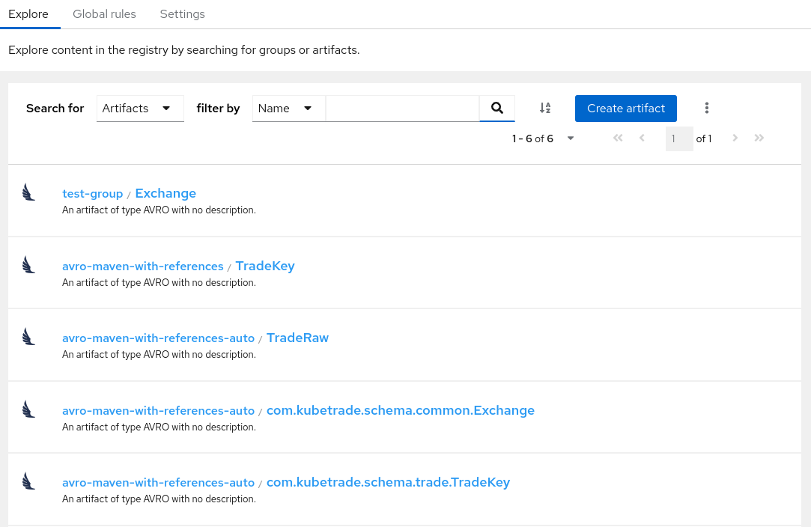
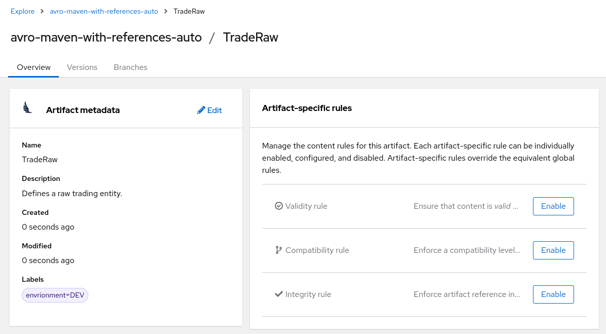
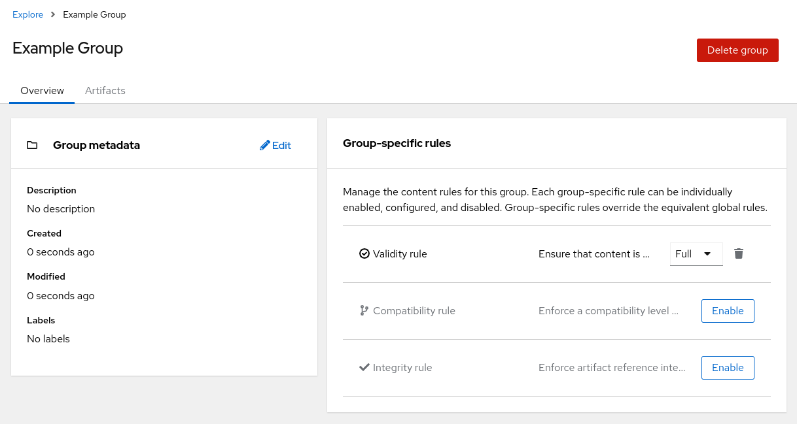
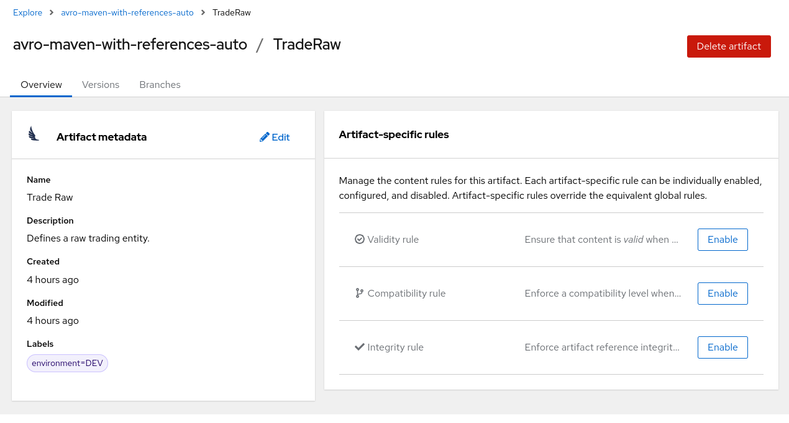
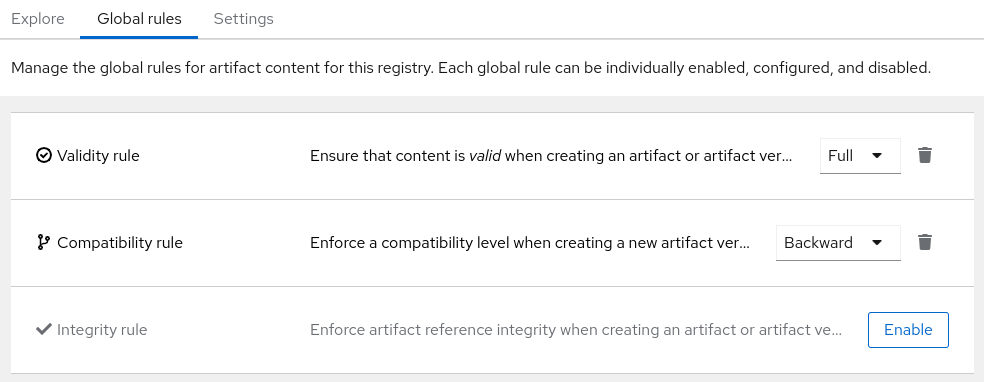

Managing Apicurio Registry content using the web console
You can manage schema and API artifacts stored in Apicurio Registry by using the Apicurio Registry web console. This includes uploading and browsing Apicurio Registry content, configuring optional rules for content, and generating client sdk code:
Configuring the Apicurio Registry web console
You can set optional environment variables to configure the Apicurio Registry web console specifically for your deployment environment or to customize its behavior.
-
You have already installed Apicurio Registry.
Configuring the web console deployment environment
When you access the Apicurio Registry web console in your browser, some initial configuration settings are loaded. The following configuration settings are required:
-
URL for core Apicurio Registry server REST API v3
Typically the Apicurio Registry operator will automatically configure the UI component with the REST API v3 URL. However, you can override this value by configuring the appropriate environment variable in the UI component deployment configuration.
Configure the following environment variables to override the default URL:
-
REGISTRY_API_URL: Specifies the URL for the core Apicurio Registry server REST API v3. For example,https://registry-api.my-domain.com/apis/registry/v3
Configuring the web console in read-only mode
You can configure the Apicurio Registry web console in read-only mode as an optional feature. This mode disables all features in the Apicurio Registry web console that allow users to make changes to registered artifacts. For example, this includes the following:
-
Creating a group
-
Creating an artifact
-
Uploading a new artifact version
-
Updating artifact metadata
-
Deleting an artifact
Configure the following environment variable:
-
REGISTRY_FEATURE_READ_ONLY: Set totrueto enable read-only mode. Defaults tofalse.
Viewing artifacts using the Apicurio Registry web console
You can use the Apicurio Registry web console to browse the schema and API artifacts stored in Apicurio Registry. This section shows a simple example of viewing Apicurio Registry groups, artifacts, versions, and rules.
-
Apicurio Registry is installed and running in your environment.
-
You are logged in to the Apicurio Registry web console:
http://MY_REGISTRY_UI_URL/ -
Artifacts have been added to Apicurio Registry using the web console, command line, Maven plug-in, or a client application.
-
On the Explore tab, browse the list of artifacts stored in Apicurio Registry, or enter a search string to find an artifact. You can select from the list to search by specific criteria such as name, group, labels, or global ID.
Figure 1. Artifacts in Apicurio Registry web console -
Click an artifact to view the following details:
-
Overview: Displays artifact metadata such as artifact ID, name, description, labels, and so on. Also displays rules for validity and compatibility that you can configure for artifact content.
-
Versions: Displays a list of all artifact versions. This will be empty unless you chose to upload a first version when you created the artifact.
-
Branches: Displays a list of branches for the artifact. This will display at least the
latestbranch, but might display other generated branches depending on your configuration.Figure 2. Artifact details in Apicurio Registry web console
-
-
Click the Versions tab to view a list of all artifact versions. Then click one of the versions in the list, or choose View Version from the Action menu for a version in the list. You will then see the following artifact version details:
-
Overview: Displays artifact version metadata such as version name, description, global ID, content ID, labels, and so on. Also displays any comments created for the artifact version.
-
Documentation (OpenAPI and AsyncAPI only): Displays automatically-generated REST API documentation.
-
Content: Displays a read-only view of the full artifact version content. For JSON content, you can click JSON or YAML to display your preferred format.
-
References: Displays a read-only view of all artifacts referenced by this artifact version. You can also click View artifacts that reference this artifact version.
 Figure 3. Artifact version details in Apicurio Registry web console
Figure 3. Artifact version details in Apicurio Registry web console
-
-
To save the artifact contents to a local file, for example,
my-openapi.jsonormy-protobuf-schema.proto, and click Download.
Adding artifacts using the Apicurio Registry web console
You can use the Apicurio Registry web console to upload schema and API artifacts to Apicurio Registry. This section shows simple examples of creating Apicurio Registry artifacts and adding new artifact versions.
-
Apicurio Registry is installed and running in your environment.
-
You are logged in to the Apicurio Registry web console:
http://MY_REGISTRY_UI_URL/
-
On the Explore tab, click Create artifact, and complete the Create artifact wizard:
You can create a placeholder artifact without content, but you must specify the artifact type, as Apicurio Registry cannot automatically detect the content type. Creating a placeholder allows you create rules first and add content later.
-
Specify the Artifact Coordinates and click Next:
-
Group ID & Artifact ID: Use the default empty settings to automatically generate an artifact ID and add the artifact to the
defaultartifact group. Alternatively, you can enter an optional artifact group or artifact ID. -
Type: Use the default Auto-Detect setting to automatically detect the artifact type (not allowed if creating an empty artifact), or select the artifact type from the list, for example, Avro Schema or OpenAPI. You must manually select the Kafka Connect Schema artifact type, which cannot be automatically detected.
-
-
Specify the Artifact Metadata and click Next:
-
Name: Enter an optional friendly name for the new artifact.
-
Description: Enter an optional description for the new artifact.
-
Labels: Optionally add one or more label (name/value pair) for the new artifact.
-
-
Specify the Version Content and click Next:
-
Version Number: Optionally add a version string if creating a first version.
-
Content: Specify the content using either of the following options:
-
From file: Click Browse, and select a file, or drag and drop a file. For example,
my-openapi.jsonormy-schema.proto. Alternatively, you can enter the file contents in the text box. -
From URL: Enter a valid and accessible URL, and click Fetch. For example:
https://petstore3.swagger.io/api/v3/openapi.json.
-
-
-
Specify the Version Metadata:
-
Name: Enter an optional friendly name for the first artifact version.
-
Description: Enter an optional description for the first artifact version.
-
Labels: Optionally add one or more label (name/value pair) for the first artifact version.
-
-
-
Click Create and view the artifact details:
-
Overview: Displays artifact metadata such as artifact ID, name, description, labels, and so on. Also displays rules for validity and compatibility that you can configure for artifact content.
-
Versions: Displays a list of all artifact versions. This will be empty unless you chose to upload a first version when you created the artifact.
-
Branches: Displays a list of branches for the artifact. This will display at least the
latestbranch, but might display other generated branches depending on your configuration.The following example shows an example Apache Avro artifact:
Figure 4. Artifact details in Apicurio Registry web console
-
-
On the Overview tab, click the Edit pencil icon to edit artifact metadata such as name or description.
You can also add zero or more labels (name + value) for categorizing and searching purposes. To add labels, perform the following steps:
-
Click Add label.
-
Enter the key name and the value (optional).
-
Repeat the first two steps to add multiple properties.
-
Click Save.
-
-
To save the artifact contents to a local file, for example,
my-protobuf-schema.protoormy-openapi.json, click Download at the end of the page. -
To add a new artifact version, switch to the Versions tab and then click Create version in the toolbar. From there, provide the following information:
-
Version Number: Optionally add a version string for the new version.
-
Content: Specify the content using either of the following options:
-
From file: Click Browse, and select a file, or drag and drop a file. For example,
my-openapi.jsonormy-schema.proto. Alternatively, you can enter the file contents in the text box. -
From URL: Enter a valid and accessible URL, and click Fetch. For example:
https://petstore3.swagger.io/api/v3/openapi.json.
-
-
Now you can click the Create button to create the new version.
-
-
To delete an artifact, click Delete in the page header.
Deleting an artifact deletes the artifact and all of its versions, and cannot be undone.
Configuring content rules using the Apicurio Registry web console
You can use the Apicurio Registry web console to configure optional rules to prevent invalid or incompatible content from being added to Apicurio Registry. All configured artifact-specific, group-specific, or global rules must pass before a new artifact version can be uploaded to Apicurio Registry. Configured artifact-specific rules override any configured group-specific rules, which in turn override any global rules. This section shows a simple example of configuring global, group-specific, and artifact-specific rules.
-
Apicurio Registry is installed and running in your environment.
-
You are logged in to the Apicurio Registry web console:
http://MY_REGISTRY_UI_URL/ -
Artifacts have been added to Apicurio Registry using the web console, command line, Maven plug-in, or a Java client application.
-
When role-based authorization is enabled, you have administrator access for global rules configuration.
-
On the Explore tab, browse the list of groups in Apicurio Registry by selecting Groups from the "Search for" menu.
-
Click a group to view its details and content rules.
-
In Group-specific rules, click Enable to configure a validity, compatibility, or integrity rule for all artifact content in the group, and select the appropriate rule configuration from the list. For example, for Validity rule, select Full.
Figure 5. Group-specific rules in Apicurio Registry web console
-
On the Explore tab, browse the list of artifacts in Apicurio Registry by selecting Artifacts from the "Search for" menu.
-
Click an artifact from the list to view its details and content rules.
-
In Artifact-specific rules, click Enable to configure a validity, compatibility, or integrity rule for artifact content, and select the appropriate rule configuration from the list. For example, for Validity rule, select Full.
Figure 6. Artifact content rules in Apicurio Registry web console
-
To access global rules, click the Global rules tab.
-
Click Enable to configure global validity, compatibility, or integrity rules for all artifact content, and select the appropriate rule configuration from the list.
Figure 7. Artifact content rules in Apicurio Registry web console
| To disable an artifact-specific, group-specific, or global rule, click the trash icon next to the rule. If you do this, and the rule is configured at a higher level (e.g. Global), then the higher level rule configuration will once again be applied. |
Changing an artifact owner using the Apicurio Registry web console
As an administrator or as an owner of a schema or API artifact, you can use the Apicurio Registry web console to change the artifact owner to another user account.
For example, this feature is useful if the Artifact owner-only authorization option is set for the Apicurio Registry on the Settings tab so that only owners or administrators can modify artifacts. You might need to change owner if the owner user leaves the organization or the owner account is deleted. Or if you simply need to transition modification authorization to a new user.
| The Artifact owner-only authorization setting and the artifact Owner field are displayed only if authentication was enabled when the Apicurio Registry was deployed. For more details, see |
-
The Apicurio Registry is deployed and the artifact is created.
-
You are logged in to the Apicurio Registry web console as the artifact’s current owner or as an administrator:
http://MY_REGISTRY_UI_URL/
-
On the Explore tab, browse the list of artifacts stored in Apicurio Registry, or enter a search string to find the artifact. You can select from the list to search by criteria such as name, group, labels, or global ID.
-
Click the artifact that you want to reassign.
-
In the Overview section, click the pencil icon next to the Owner field.
-
In the New owner field, select or enter an account name.
-
Click Change owner.
Configuring Apicurio Registry settings using the web console
As an administrator, you can use the Apicurio Registry web console to configure dynamic settings for Apicurio Registry at runtime. You can manage configuration options for features such as authentication, authorization, and API compatibility.
| Authentication and authorization settings are only displayed in the web console if authentication was already enabled when the Apicurio Registry was deployed. For more details, see Configuring your Apicurio Registry deployment. |
-
The Apicurio Registry is already deployed.
-
You are logged in to the Apicurio Registry web console with administrator access:
http://MY_REGISTRY_UI_URL/
-
In the Apicurio Registry web console, click the Settings tab.
-
Select the settings that you want to configure for Apicurio Registry:
Table 1. Authentication settings Setting Description HTTP basic authentication
Displayed only when authentication is already enabled (during deployment). When selected, Apicurio Registry users can authenticate using HTTP basic authentication, in addition to OAuth. Not selected by default.
Table 2. Authorization settings Setting Description Anonymous read access
Displayed only when authentication is already enabled. When selected, Apicurio Registry grants read-only access to requests from anonymous users without any credentials. This setting is useful if you want to use Apicurio Registry to publish schemas or APIs externally. Not selected by default.
Artifact owner-only authorization
Displayed only when authentication is already enabled. When selected, only the user who created an artifact can modify that artifact. Not selected by default.
Artifact group owner-only authorization
Displayed only when authentication is already enabled and Artifact owner-only authorization is also enabled. When selected, only the user who created an artifact group has write access to that artifact group, for example, to add or remove artifacts in that group. Not selected by default.
Authenticated read access
Displayed only when authentication is already enabled. When selected, Apicurio Registry grants at least read-only access to requests from any authenticated user regardless of their user role. Not selected by default.
Table 3. Compatibility settings Setting Description Canonical hash mode (compatibility API)
When selected, the Schema Registry compatibility API uses the canonical hash instead of the regular hash of the content.
Legacy ID mode (compatibility API)
When selected, the Confluent Schema Registry compatibility API uses
globalIdinstead ofcontentIdas an artifact identifier.Maximum number of Subjects returned (compatibility API)
Determines the maximum number of Subjects that will be returned by the Confluent Schema Registry compatibility API (for the
/subjectsendpoint).Table 4. Web console settings Setting Description Download link expiry
The number of seconds that a generated link to a
.zipdownload file is active before expiring for security reasons, for example, when exporting artifact data from Apicurio Registry. Defaults to 30 seconds.Table 5. Semantic versioning settings Setting Description Automatically create semver branches
When enabled, automatically create or update branches for major ('A.x') and minor ('A.B.x') artifact versions.
Ensure all version numbers are 'semver' compatible
When enabled, validate that all artifact versions conform to Semantic Versioning 2 format (https://semver.org).
Table 6. Additional properties Setting Description Delete artifact
When selected, users are permitted to delete artifacts in Apicurio Registry by using the Core Registry API. Not selected by default.
Delete artifact version
When selected, users are permitted to delete artifact versions in Apicurio Registry by using the Core Registry API. Not selected by default.
Delete group
When selected, users are permitted to delete groups in Apicurio Registry by using the Core Registry API. Not selected by default.
Storage read-only mode
When selected, Registry will return an error for operations that write to the storage (this property excepted). Not enabled by default.
Exporting and importing data using the Apicurio Registry web console
As an administrator, you can use the Apicurio Registry web console to export data from one Apicurio Registry instance, and import this data into another Apicurio Registry instance. You can use this feature to easily migrate data between different instances.
The following example shows how to export and import existing data in a .zip file from one Apicurio Registry instance to another instance. All the artifact data contained in the Apicurio Registry instance is exported in the .zip file.
-
Apicurio Registry instances have been created as follows:
-
The source instance that you are exporting from contains at least one schema or API artifact
-
The target instance that you are importing into is empty to preserve unique IDs
-
-
You are logged into the Apicurio Registry web console with administrator access:
http://MY_REGISTRY_UI_URL/
-
In the web console for the source Apicurio Registry instance, view the Explore tab.
-
Click the additional actions icon (three vertical dots) next to Create artifact in the toolbar, and select Export all (as .ZIP) to export the data for this Apicurio Registry instance to a
.zipdownload file. -
In the web console for the target Apicurio Registry instance, view the Explore tab.
-
Click the additional actions icon (three vertical dots) next to Create artifact in the toolbar, and select Import from .ZIP.
-
Drag and drop or browse to the
.zipdownload file that you exported earlier. -
Click Import and wait for the data to be imported.